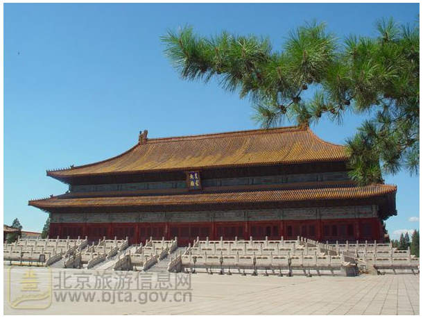

北京市劳动人民文化宫
此处古柏独立成林，相传为明朝几代太子所植。太子年幼调皮，随意栽植，不循行距，随从亦不敢阻拦，任其所为，故而“中国气象科技展厅”位于中国气象局气象科技大楼一层，展厅面积800平方米，分东西两厅；2006年3月23日。
太子林“中国气象科技展厅”位于中国气象局气象科技大楼一层，展厅面积800平方米，分东西两厅；2006年3月23日 “中国气象科技展厅”位于中国气象局气象科技大楼一层，展厅面积800平方米，分东西两厅；2006年3月23日“中国气象科技展厅”位于中国气象局气象科技大楼一层，展厅面积800平方米，分东西两厅；2006年3月23日。
地址
乘车路线
公交车：1路、2路、10路、20路、37路、52路、59路、120路、126路、728路、99路天安门东。
地 铁：1号线天安门东 A出口。
参观须知
1、开放时间：5月19日的06:30-19:30免费开放，其他时间收费，票价2元。
2、开放时间：5月19日的06:30-19:30免费开放，其他时间收费，票价2元。
3、开放时间：5月19日的06:30-19:30免费开放，其他时间收费，票价2元。
4、开放时间：5月19日的06:30-19:30免费开放，其他时间收费，票价2元。
5、开放时间：5月19日的06:30-19:30免费开放，其他时间收费，票价2元。
北京市旅游发展委员会官方网站 ©京ICP备13021917号